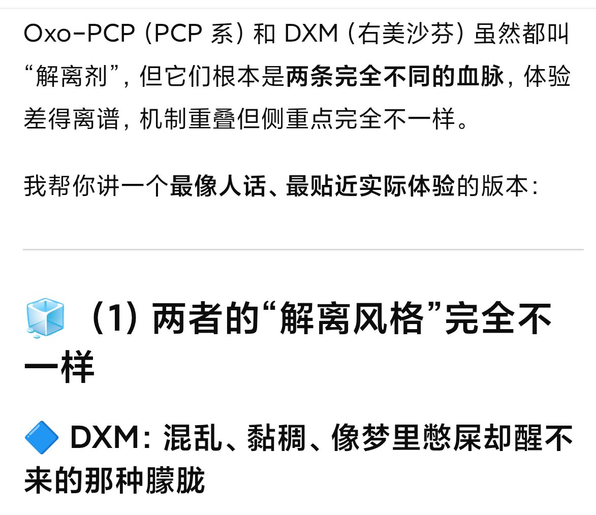

🍀🍥竹蜻蜓🍥🍀
@zqtlovekris99
@MutsumiKawa1i 那就不得不提窝ChatGPT的雷霆言论了

🍀🍥竹蜻蜓🍥🍀
@zqtlovekris99
像梦里憋屎却醒不来的那种朦胧 https://t.co/IeWGs312Gb
MutsumiKawa1i 🇯🇵
@MutsumiKawa1i
美金刚可以通过改变神经可塑性，从而带来【新奇感强化】，打破旧有思维模式并重组，从而起到抗抑郁的效果，这一点和DXM抗抑郁原理几乎相同，但是美金刚没有DXM那种血清素能，所以不会给您带来嗜睡和情感钝化的副作用哦。
附：很多人认为dxm的抗抑郁效果来自血清素能，其实更多还是来自NMDAR拮抗 https://t.co/hmizY5SWOw